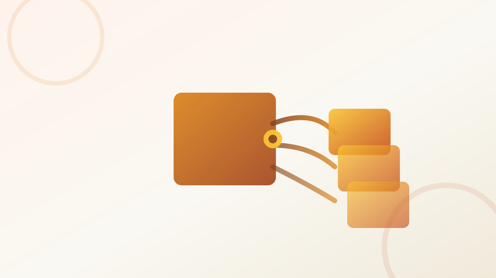

Drawing
Runtime-Fit

The runtime dictates the choice more than features do. React 19 is a non-issue — all six work with it. The real axis is RSC, bundle, and lazy-loading. Next.js App Router / RSC → next-intl or Lingui; Vite SPA → Paraglide (smallest) or react-i18next (ecosystem).
No RSC — everything is client-side, hydrates normally. Axis = bundle + DX.
JSON / ICU / message files, one per locale, in the repo.
Compile-time libs emit tree-shaken typed functions; runtime-dictionary libs bundle the catalog behind a lookup layer.
Vite splits locales natively via dynamic import() — the initial bundle carries one locale, others load on demand as chunks.[11]
All translation work happens in the client; the payload is what the axis in Detail A measures.
RSC is the Next.js 16 default. Resolve on the server → ship translated HTML.
File-based default assumes locales live in the repo — updates ride deployments unless you wire a remote source.[3]
Awaitable getTranslations (next-intl) or server useLingui reading a per-request instance from React cache — no use client.[4][8]
Client Components use the useTranslations / useLingui hook for the parts that need runtime state.[4]
react-i18next the safe default; next-intl owns the App Router; Paraglide & Lingui the compile-time challengers.
ICU-first vs interpolation-first vs MF2-inspired — how each authors plurals, gender and Intl formatting.
Compile-first libs and next-intl give type safety for free; i18next and react-intl bolt it on.
The library pins your extraction model & file format; the TMS you pair it with decides the workflow.